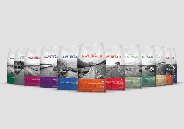

Su principal característica, es que, el concentrado Taste Of The Wild se destaca por ofrecer alimentos que imitan la dieta natural de tus peluditos. Por eso, utiliza fuentes de proteínas semejantes a las que consumirían en la naturaleza. Además, incluye opciones sin granos, lo que es muy beneficioso para canes o felinos con sensibilidades alimentarias o alergias

Nutra Nuggets es una marca estadounidense que se encarga especialmente de fabricar y comercializar comida para perros de la mejor calidad a un precio razonable. Su fórmula contiene los nutrientes necesarios y los ingredientes de la mejor calidad que ayudan a mejorar y fortalecer la salud de tu mascota en cualquiera de las etapas de su vida. Cada una de sus presentaciones ofrecen proteínas digestibles, la cantidad adecuada de vitaminas y minerales considerando la etapa de vida en la que se encuentran y la actividad física que realiza tu peludo a diario. Este alimento para perros viene en diferentes sabores agradables para el paladar de tu peludito y lo más importante es que lograrás suplir todas las necesidades nutricionales que tenga cualquier perro durante su desarrollo.
Diamond Naturals es una marca que se encarga de producir alimentos secos y húmedos para perros y gatos, formulados con ingredientes frescos y de excelente calidad. Sus productos están elaborados para satisfacer las necesidades nutricionales de cada mascota, cuentan con alimentos completos, balanceados, libres de conservantes y de colorantes artificiales. Asimismo, las formulaciones de Diamond se ajustan a las diferentes razas y edades, por lo que vas a encontrar desde alimentos para cachorros, adultos y seniors. Igualmente, presenta distintos sabores agradables al paladar de nuestras mascotas, con alto contenido de fibra para una mejor digestión, y, con Omega 3 y 6 para que su piel y pelaje estén en óptimas condiciones.
